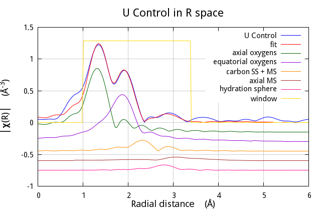

16.3. Uranyl ion in solution¶
Topics demonstrated:
- fuzzy degeneracy
- virtual paths
- arbitrary single scattering paths
In this experiment, the control sample was a buffered solution with a dissolved uranyl acetate. Following the example of S. Kelly, et al., I will use a crystalline analogue of the solvated moiety as my starting point for the Feff calculation.
-
<<<<<<< HEAD
- S. D. Kelly, K. M. Kemner, J. B. Fein, D. A. Fowle, M. I. Boyanov, B. A. Bunker, and N. Yee. X-ray absorption fine structure determination of pH-dependent U-bacterial cell wall interactions. Geochimica et Cosmochimica Acta, 66(22):3855 – 3871, 2002. doi:10.1016/S0016-7037(02)00947-X.
- B. Ravel, C. Scorzato, D. P. Siddons, S. D. Kelly, and S. R. Bare. Simultaneous XAFS measurements of multiple samples. Journal of Synchrotron Radiation, 17(3):380–385, May 2010. doi:10.1107/S0909049510006230.
- D. H. Templeton, A. Zalkin, H. Ruben, and L. K. Templeton. Redetermination and absolute configuration of sodium uranyl(VI) triacetate. Acta Crystallographica Section C, 41(10):1439–1441, Oct 1985. doi:10.1107/S0108270185008095.
Here is the input data for Atoms for crystalline sodium uranyl triacetate:
title = Templeton et al.
=======
Here is the input data for Atoms for crystalline sodium uranyl triacetate:
title = Templeton et al.
>>>>>>> 753331e6a97ab20b2d74045d9da536a4dde339ea
title = Redetermination and Absolute configuration of Sodium Uranyl(VI) triacetate.
title = Acta Cryst 1985 C41 1439-1441
space = P 21 3
a = 10.6890 b = 10.6890 c = 10.6890
core = U edge = L3 rmax = 7.0
atoms
! elem x y z tag
U 0.42940 0.42940 0.42940 U
Na 0.82860 0.82860 0.82860 Na
O 0.33430 0.33430 0.33430 Oax
O 0.52420 0.52420 0.52420 Oax
O 0.38340 0.29450 0.61100 Oeq
O 0.54640 0.24430 0.50070 Oeq
C 0.47860 0.22600 0.59500 C
C 0.50880 0.12400 0.68620 C

Fig. 16.4 This produces a complex crystal structure that includes the uranyl complex onthe right.
Following Shelly's example, I will take bits and pieces from this crystalline analog and use them to understand the EXAFS from my solution sample. The rest of the crystal is simply unused. I expect that the solvated complex looks basically like this snippet of the full crystal.
Note that there are two crystallographically distinct axial oxygen sites and and two equatorial sites. When you run this through Feff's pathfinder, you find that each site leads to a single scattering path of a slightly different length than its partner. It is highly unlikely that I can use an EXAFS measurement of medium quality to distinguish two slightly different oxygen distances. In Shelly's paper, you can see that she removes these slight degeneracies by using a subset of the paths Feff generates and resetting their degeneracies appropriately. For instance, she uses just one of the axial oxygen paths and multiplies it by 2 to account for the two axial oxygen atoms.
This example shows off several aspects of the new technology that DEMETER brings to bear on the EXAFS analysis problem, including fuzzy degeneracy, virtual paths, and arbitrary single scattering paths. Read on!
In this first code example, FEFF is run using a
feff.inp that is already on disk. The potential and path
finder calculations are made, at lines 67. Then the first few paths
are plotted at lines 8-13.
Line 14 is a feature of the screen UI which is used to pause the script
until the user hits return, otherwise the plot made using Gnuplot would
blink off the screen. The pause method is imported when the UI is
set to screen, as at line 3. Without explicitly setting the screen UI,
attempting to call the pause method will do nothing.
1 2 3 4 5 6 7 8 9 10 11 12 13 14 <<<<<<< HEAD 15 | #!/usr/bin/perl
=======
15 | #!/usr/bin/perl
>>>>>>> 753331e6a97ab20b2d74045d9da536a4dde339ea
use Demeter qw(:plotwith=gnuplot :ui=screen);
my $feff = Demeter::Feff->new(file=>'UAce/feff.inp');
$feff -> set(workspace=>'UAce', screen=>0);
$feff -> potph;
$feff -> pathfinder;
my @list = @{ $feff-> pathlist };
foreach (@list[0..4]) {
my $this = Demeter::Path->new(parent=>$feff,
sp=>$_);
$this-> plot('r');
};
$feff -> pause(-1);
$feff -> freeze('UAce/uace.yaml');
|
The state of the FEFF calculation is frozen to disk at line 15 and will be used in the following example to import the paths. This is a handy trick that was not used in the previous examples. By freezing the FEFF calculation, you do not have to run FEFF on the fly before your fit. This will save a bit of time and, perhaps, make development of a fitting model a bit less tedious.
Looking at the interpretation of the FEFF calculation is
useful before launching into the fit. This can be done with the
intrp command line tool (which has some nice output options,
including html, TeX, and ASCII-colored screen text) or by using the
intrp method in your script.
Note that, in sodium uranyl triacetate, the two dioxo scattering paths differ in path length by about 0.006 Å and the equatorial oxygens are split into two groups of three that differ in distance also by about 0.006 Å. In this case, the fuzzy degeneracy is quite helpful. The fit is probably not so sensitive to such a small difference in scattering length, which may not even exist in the solution sample. Because the degeneracy fuzz is set by default to 0.01 Å, the two dioxo scatterers are made into a single scattering path of degeneracy 2 and the 6 equatorial oxygen atoms are made into a single scattering path of degeneracy 6. This simplifies the bookkeeping aspects of creating the fitting model.
Here is the script that sets up the fitting model.
1 2 3 4 5 6 7 8 9 10 11 12 13 14 15 16 17 18 19 20 21 22 23 24 25 26 27 28 29 30 31 32 33 34 35 36 37 38 39 40 41 42 43 44 45 46 47 48 49 50 51 52 53 54 55 56 57 58 59 60 61 62 63 64 65 66 67 68 69 70 71 72 73 74 75 76 77 78 79 80 81 82 83 84 85 86 87 88 89 90 91 92 93 94 95 96 97 98 99 100 101 102 103 104 105 106 107 108 109 110 111 112 113 114 115 116 117 118 119 120 121 122 123 124 125 126 127 128 <<<<<<< HEAD 129 | #!/usr/bin/perl
=======
129 | #!/usr/bin/perl
>>>>>>> 753331e6a97ab20b2d74045d9da536a4dde339ea
## strict and warnings imported automatically with Demeter
use Demeter qw(:plotwith=gnuplot :ui=screen);
unlink("controlfit.iff") if (-e "controlfit.iff");
my $prj = Demeter::Data::Prj -> new(file=>'U_DNA.prj');
my $data = $prj -> record(1);
$data -> set_mode(screen => 0, backend => 1, file => ">controlfit.iff");
$data -> set(name => 'U control',
fft_kmin => 3.0, fft_kmax => 10.5,
bft_rmin => 1, bft_rmax => 3.3, #4.22,
fit_space => 'r',
fit_k1 => 1, fit_k2 => 1, fit_k3 => 1,
fit_do_bkg => 0,
);
my @gds = (
$data->simpleGDS("guess amp = 1"),
$data->simpleGDS("guess enot = 0"),
$data->simpleGDS("guess drax = 0"),
$data->simpleGDS("guess dreq = 0"),
$data->simpleGDS("guess drc = 0"),
$data->simpleGDS("guess ssax = 0.003"),
$data->simpleGDS("guess sseq = 0.003"),
$data->simpleGDS("guess ssc = 0.003"),
$data->simpleGDS("guess drhyd = 0"),
$data->simpleGDS("guess sshyd = 0.003"),
);
my $feff = Demeter::Feff->new(yaml=>"UAce/uace.yaml");
$feff -> set(workspace=>"UAce", screen=>0,);
my @list_of_paths = @{ $feff->pathlist };
my @paths = ();
my $carbon = Demeter::VPath->new(name=>"carbon SS + MS");
my $axialms = Demeter::VPath->new(name=>"axial MS");
my $counter = 0;
my @common = (parent => $feff, data => $data, s02 => "amp", e0 => "enot");
## axial oxygen
my $this_path = Demeter::Path -> new()
-> set(@common, sp => $list_of_paths[$counter++],
name => "axial oxygens",
delr => "drax", sigma2 => "ssax",
);
push @paths, $this_path;
## equatorial oxygen
$this_path = Demeter::Path -> new()
-> set(@common, sp => $list_of_paths[$counter++],
name => "equatorial oxygens",
delr => "dreq", sigma2 => "sseq",
);
push @paths, $this_path;
## carbon
$this_path = Demeter::Path -> new()
-> set(@common, sp => $list_of_paths[$counter++],
name => "C",
delr => "drc", sigma2 => "ssc",
);
push @paths, $this_path;
$carbon->include($this_path);
## C-O triangle
$this_path = Demeter::Path -> new()
-> set(@common, sp => $list_of_paths[$counter++],
name => "C-O triangle",
delr => "(dreq+drc)/2", sigma2 => "2*(sseq+ssc)/3",
);
push @paths, $this_path;
$carbon->include($this_path);
## axial oxygen rattle MS path
$this_path = Demeter::Path -> new()
-> set(@common, sp => $list_of_paths[$counter++],
name => "axial MS rattle",
delr => "drax*2", sigma2 => "ssax*4",
);
push @paths, $this_path;
$axialms->include($this_path);
## axial oxygen non-forward scattering MS path
$this_path = Demeter::Path -> new()
-> set(@common, sp => $list_of_paths[$counter++],
name => "axial MS non-forward linear",
delr => "drax*2", sigma2 => "ssax*2",
);
push @paths, $this_path;
$axialms->include($this_path);
## axial oxygen forward scattering through absorber MS path
$this_path = Demeter::Path -> new()
-> set(@common, sp => $list_of_paths[$counter++],
name => "axial MS forward linear",
delr => "drax*2", sigma2 => "ssax*2",
);
push @paths, $this_path;
$axialms->include($this_path);
## make up a scatterer to act as the hydration sphere
my $ss = Demeter::SSPath -> new(@common,
name => "hydration sphere",
ipot => 3,
reff => 3.35,
delr => 'drhyd',
sigma2 => 'sshyd',
);
push @paths, $ss;
my $fit = Demeter::Fit->new(gds => \@gds,
data => [$data],
paths => \@paths, );
$fit -> fit;
$fit -> logfile("controlfit.log", "U control", q{});
$data -> po -> set(kweight=>2, rmax=>6, r_pl=>'r', plot_fit=>1);
my ($step, $jump) = (0,-0.3);
map {$_->data->y_offset($step);
$_->plot('r');
$step+=$jump;
} ($data, $paths[0], $paths[1], $carbon, $axialms, $ss);
$data -> pause;
|
There are a lot of interesting things going on in this fit:
- At line 4, I turn on the gnuplot plotting backend and enable the screen UI features that make Demeter more pleasant to use at the command line.
- At lines 8-18, I import the uranyl data from an ATHENA project file and set various data and plotting parameters.
- In lines 20-31, I define the guess parameters using a bit of syntactic sugar. I could just as well have written have use the normal interface.
- At lines 33-35, I import the results of a Feff calculation that I had previously made using the first DEMETER script on this page.
- At line 37 and 38, I create two VPaths, or virtual paths. These get filled up at lines 65, 74, 83, 92, and 101.
- At line 40, I define some Path attributes that will be used in common for all Path objects defined.
- At lines 105-113, I create an arbitrary single scatering path from the oxygen using the SSPath object at a distance where I consider it reasonable to see scattering from the hydration sphere. This SSPath then gets included in the fit like a normal Path.
- At lines 122-127, I do a bit of trickery to make the spiffy stacked
plot shown below. Note that the VPath and SSPath objects get plotted
in the same way as the Data and Paths. Indeed, the plot is
accomplished by looping over all the objects that I want to display
in the plot. Note the use of the
dataattribute at line 124. They_offsetis an attribute of the Data object. A path-like object gets its value ofy_offsetfrom its associated Data object. A Data object is its owndataattribute. This little idiom is the way of always setting something likey_offsetto what it needs to be to plot the current object in a loop. - The last line pauses the script before terminating so that you have time to examine the plot. The Gnuplot process ends when the script ends, making the plot window go away.

Fig. 16.5 The fit as χ(k).
This was made by substituting lines 122-127 with:
<<<<<<< HEAD$data -> po -> set(kweight=>2, plot_fit=>1);
=======
$data -> po -> set(kweight=>2, plot_fit=>1);
>>>>>>> 753331e6a97ab20b2d74045d9da536a4dde339ea
my ($step, $jump) = (0,-0.5);
map {$_->data->y_offset($step);
$_->plot('k');
$step+=$jump;}
($data, $paths[0], $paths[1],
$carbon, $axialms, $ss);
$data -> plot_window('k');

Fig. 16.6 The fit as the magnitude of χ(R).
This was made by substituting lines 122-127 with:
<<<<<<< HEAD
$data -> po -> set(kweight=>2, plot_fit=>1);
=======
$data -> po -> set(kweight=>2, plot_fit=>1);
>>>>>>> 753331e6a97ab20b2d74045d9da536a4dde339ea
$data -> po -> set(r_pl => 'm');
my ($step, $jump) = (0,-0.25);
map {$_->data->y_offset($step);
$_->plot('r');
$step+=$jump;}
($data, $paths[0], $paths[1],
$carbon, $axialms, $ss);
$data -> plot_window('r');

Fig. 16.7 The fit as the magnitude of χ(R). This is the plot that is
made by lines 122-127.
DEMETER is copyright © 2009-2016 Bruce Ravel – This document is
copyright © 2016 Bruce Ravel
This document is licensed under The Creative Commons Attribution-ShareAlike License.
If DEMETER and this document are useful to you, please
consider supporting The Creative Commons.
{kind=link}

Table Of Contents
- 1. Introduction
- 2. The basics of data processing
- 3. Processing μ(E) data <<<<<<< HEAD
- 4. High level actions of the object model
- 5. Analysis of XANES data =======
- 4. Analysis of XANES data
- 5. High level actions of the object model >>>>>>> 753331e6a97ab20b2d74045d9da536a4dde339ea
- 6. Atoms
- 7. Feff
- 8. Scattering paths
- 9. Guess/Def/Set Parameters
- 10. Fitting EXAFS data
- 11. Using perl to structure a fit
- 12. Local guess parameters and the characteristic value
- 13. Path-like objects
- 14. User interfaces
- 15. Output formats
- 16. Full examples
Helpful Links
Current version: 0.9.24
- Demeter homepage
- Demeter @ github <<<<<<< HEAD
- Ifeffit mailing list
- Ifeffit @ github
- Larch homepage
- xafs.org
- Athena manual
- Artemis manual
- Bug reporting hints
- How to ask a good question =======
- Ifeffit
- Larch
- xafs.org
- Ifeffit mailing list
- Bug reporting hints
- How to ask a good question >>>>>>> 753331e6a97ab20b2d74045d9da536a4dde339ea